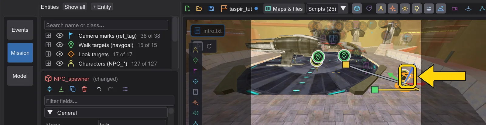
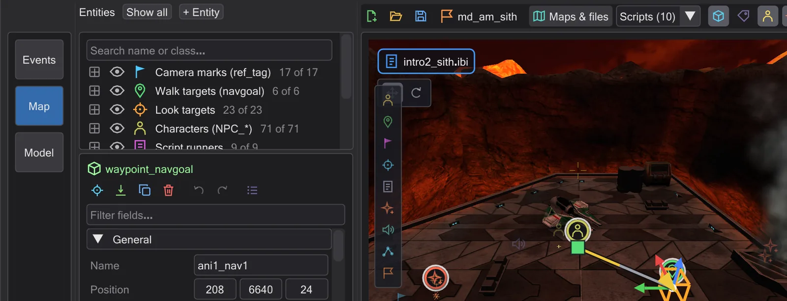
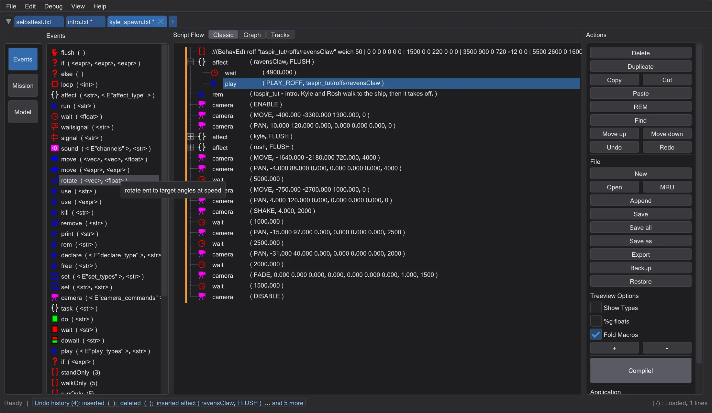
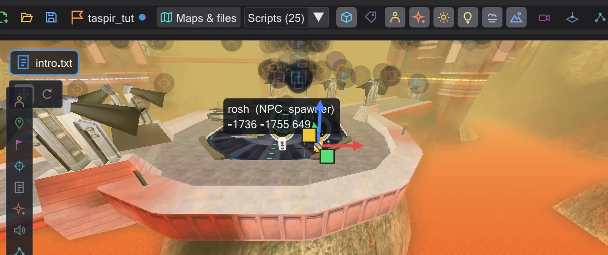
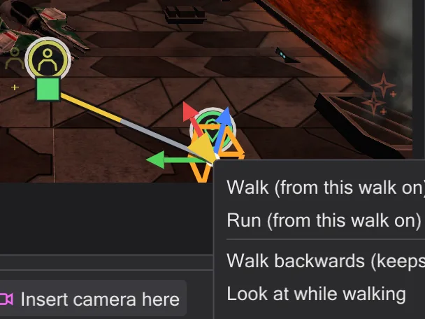
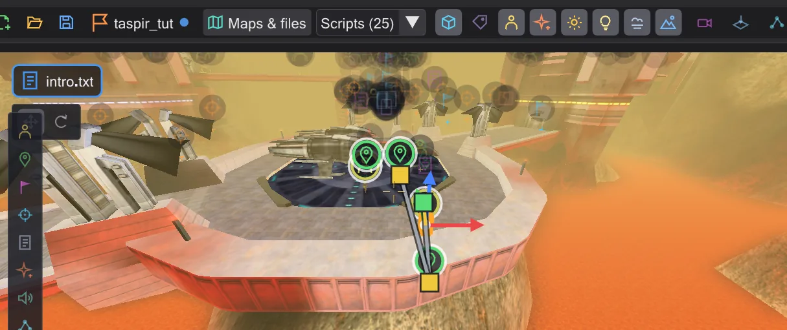

A figure walks
Place a character and a walk target, let the script send it there, then change the path on the map - walk or run, a point in between.
Steps#
- 1
Place a character. In Map mode click the tile Character (NPC_spawner) on the left edge of the view, then click on the floor. In the inspector set
NPC_type(the ... button searches every NPC of the game) and a Name such aswalker.
A character placed on the floor. - 2
Place a walk target. Click the tile Walk target (waypoint_navgoal) and click where the figure should go.

The walk target. - 3
Let the script send it. Right-click the character in the entity list → Insert affect block: an
affect ( "walker", FLUSH )block appears. Right-click the walk target in the list → Insert as walk target (SET_NAVGOAL): the line appears below the selected one - drag it into the affect block. The script now readsaffect ( "walker", FLUSH ) { set ( SET_NAVGOAL, "..." ); }.
The affect block with the navgoal. - 4
Play. Press the play button (▶): the figure walks, the path behind it turns yellow. Its row in the timeline shows the walk as a band.

The figure on its way. - 5
Run instead of walk. Right-click the end handle of the path → Run (from this walk on).
SET_RUNNINGis written before the navgoal and the figure arrives sooner.
The menu of the walk target. - 6
A point in between. Put the timeline in the middle of the walk, grab the figure and drag it aside: a new navgoal is created at that moment, and the figure walks there first.

A new point in the middle of the walk.


More about paths, facing and walking backwards: Figures and paths.